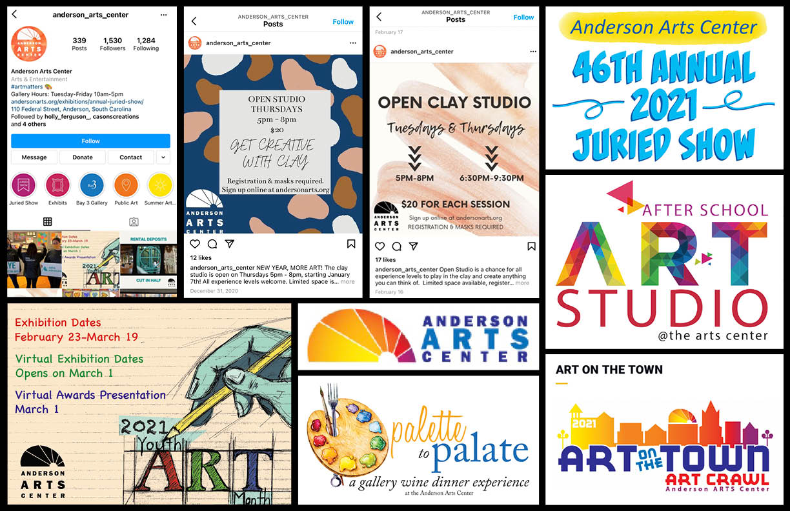

The Research
What information can be learned?
Primary Research
The Anderson County Arts Center had some graphics created for various events that I found on their website and Instagram account. I included screenshots of these graphics, a screenshot of their recent Instagram posts, and a photo of the Anderson Arts Center logo. Many of the current promotional images are cluttered and the logo is pixelated.
Design Challenge
What is the problem?
There is a need for the arts in Anderson County.
Framing the problem as a design question:
How can this website encourage interest in the arts?
The ultimate impact:
For the community of Anderson, South Carolina to be interested and involved in the arts?
Possible solutions to the problem:
Classes and events related to the arts will lead to community involvement. An effective website will provide a place to register for these events online, will display clear hierarchy, intuitive design, and easy to navigate for the user.
Some context and constraints:
This problem is limited to Anderson County as the Anderson County Arts Center is a local non-profit organization. The goal is to reach families to encourage community involvement.
Design question:
How can this website encourage community involvement by reaching out to families and local artists?
Secondary Research
Step 1
Tom Borrup was able to find that the largest contributor to the health and well-being of a community is the level of shared interest. Many factors contribute to the health of a community, but overall happiness and connectedness increases when there are shared interests and participation in related activities. (Project for Public Spaces)
Community involvement is crucial for the arts to thrive, and at the same time, the arts benefit the community. By having ways for members of the community to stay connected, learn, and participate in a shared activity like the arts, that community grows stronger. When community members are engaged in common activities with each other, they are more likely to address issues in the community and work together. (American Planning Association)
Step 2

Murals are an effective way to bring interest to the arts. Murals bring color and can transform the look of a town. Having something beautiful and vibrant that an area can be known for, and visually represents the community, brings pride to the people that live there. A mural can evoke conversation and bring people together. The actual painting of the mural could be done by a local artist, commissioned by the Anderson Arts Center. There could be a public contest to decide the content of the mural. This would incorporate ideas from the community, and get local artists involved and excited about having their work displayed. (Product Care)
Step 3
The Arts fund has a page for events that its well organized. Each event is listed vertically with the newest events displayed at the top and the previously posted events listed below. Each event has a photo on the left, a short description on the right, and a “learn more” button that leads to the respective event page. (Arts Fund)
The Indianapolis Art Center is an example of a solution that is not very effective. The website feels a little cluttered and has some awkward whitespace on the lower part of the homepage. Their nav bar is interactive but closes quickly if the cursor scrolls a little off it. I was looking for an example of a good donation page so that I can improve Anderson’s, but Indianapolis’ is set up similarly. (Indianapolis Art Center)
Step 4
To get more people in the community excited about the arts, it is best to encourage those already somewhat engaged. Marketing should be mainly directed at people that are already involved to strengthen that support. Members of the community that are already involved in making art, viewing it, or supporting artists will be interested in what the Arts Center will have to offer. (Building Arts Participation)